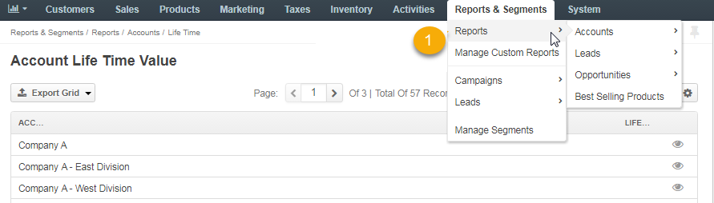
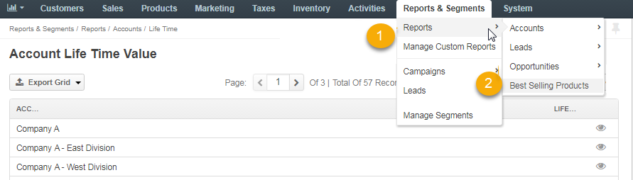
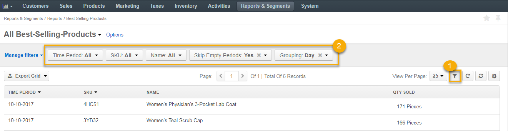
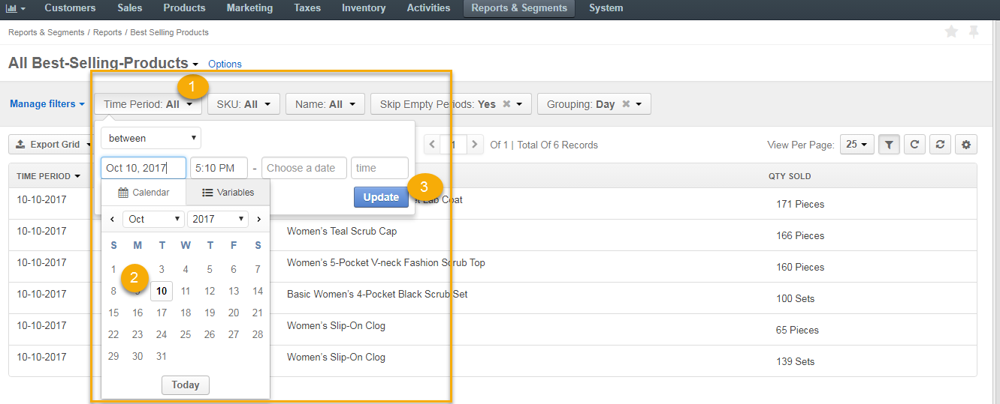
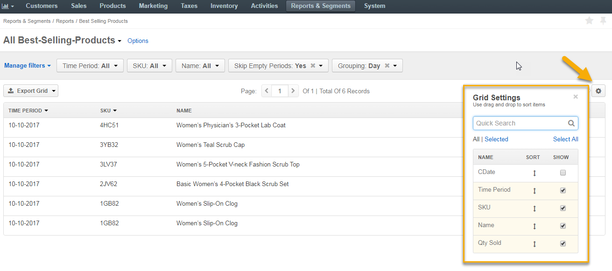

To view a system report, navigate to Report & Segments > Reports in the main menu.
The following system reports are available out-of-the-box at the Oro application:
The Best Selling Products report displays the statistics regarding the most popular and highly purchased products organized in a table which can be filtered by a specific period of time, SKU, name, etc.
To filter the output of a Best Selling Products report:
Navigate to Report & Segments > Reports > Best Selling Products.
Here, you can view:
To configure a new report, click to display the configurable fields and filter them by the corresponding time and product.
Once finished with the configuration, click Update at the same field to reload the page and display a new report with the requested information.
Also, you can manage the columns of the report by clicking to the right and opening the Grid Settings to see the list of columns that organize the item details.
To reorder the columns, click and hold the column name, then drag it to a new location. To show / hide a column, select / clear the Show check box next to it.
